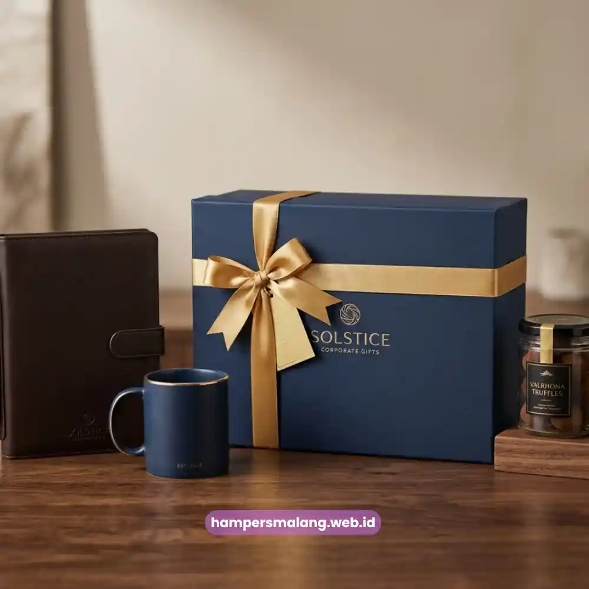

Hampers ucapan terima kasih untuk klien adalah cara paling elegan untuk menyampaikan apresiasi sekaligus merawat hubungan bisnis jangka panjang.
Sebuah hampers yang dikurasi dengan tepat mampu menyampaikan pesan profesionalisme tanpa perlu kata-kata panjang.
Bagi perusahaan yang ingin kesan pertama maupun kesan terakhir tetap membekas, memilih hampers yang tepat menjadi investasi komunikasi yang sangat efektif.
Di tengah persaingan bisnis yang semakin ketat, klien tidak hanya menilai kualitas produk atau layanan, tetapi juga bagaimana mereka diperlakukan setelah transaksi selesai.
Studi internal berbagai konsultan hubungan pelanggan pada periode 2023-2024 menunjukkan hasil yang sangat menarik.
Lebih dari 68 persen klien korporat merasa lebih loyal terhadap mitra bisnis yang memberikan apresiasi non-transaksional seperti hampers ucapan terima kasih.
Angka ini menegaskan bahwa gestur kecil dapat berdampak besar pada retensi klien di masa depan.
Selain itu, riset tren corporate gifting di Indonesia pada tahun 2025 mencatat kenaikan permintaan hampers premium untuk keperluan relasi bisnis sebesar hampir 40 persen.
Hal ini seiring semakin banyak perusahaan yang menyadari pentingnya sentuhan personal dalam hubungan B2B.
Apa Itu Hampers Ucapan Terima Kasih untuk Klien?
Hampers ucapan terima kasih untuk klien adalah paket hadiah yang dikemas secara eksklusif sebagai simbol penghargaan.
Simbol penghargaan ini diberikan atas kepercayaan, kerja sama, atau pencapaian tertentu dalam hubungan bisnis.
Berbeda dengan hadiah pribadi biasa, hampers ini dirancang untuk mencerminkan citra profesional pengirim sekaligus memberi kesan istimewa bagi penerima.
Konsep ini bukan sekadar formalitas administratif yang dilakukan rutin setiap tahun.
Melainkan bagian dari strategi relationship management yang banyak diterapkan oleh perusahaan besar maupun UMKM.
Terutama bagi perusahaan yang berorientasi pada hubungan jangka panjang dengan mitra bisnisnya.
Sebuah hampers yang dipilih dengan cermat dapat menjadi representasi nilai dan identitas perusahaan pengirim.
Baca Juga: Momen Tepat Mengirim Hampers untuk Klien agar Kesan Selalu Membekas
Mengapa Hampers Ini Penting bagi Hubungan Bisnis?
Hampers ucapan terima kasih penting karena mampu menutup siklus transaksi dengan kesan positif yang bertahan lama.
Klien yang merasa dihargai cenderung memberikan rekomendasi, memperpanjang kontrak, atau membuka peluang kerja sama baru.
Elemen emosional inilah yang sering kali tidak bisa digantikan oleh diskon harga maupun promosi biasa.
Selain nilai emosional, hampers juga berfungsi sebagai media branding yang halus bagi perusahaan Anda.
Kemasan dengan sentuhan logo perusahaan atau warna korporat secara tidak langsung memperkuat brand recall di mata klien.
Hal ini akan terjadi setiap kali mereka menggunakan atau melihat isi hampers tersebut di kemudian hari.
Siapa yang Cocok Mengirimkan Hampers Ucapan Terima Kasih?
Hampers jenis ini cocok dikirimkan oleh perusahaan jasa, agensi, konsultan, hingga instansi yang menjalin hubungan berkelanjutan.
Tim marketing, business development, dan sekretariat perusahaan biasanya menjadi pihak yang paling sering mengoordinasikan pengiriman hampers ini.
Perusahaan skala menengah hingga korporasi besar umumnya menjadikan hampers ucapan terima kasih sebagai bagian dari anggaran tahunan customer relationship.
Terutama menjelang penutupan proyek besar, akhir tahun fiskal, atau momen perayaan tertentu bersama klien.

Kapan Waktu yang Tepat Mengirim Hampers kepada Klien?
Waktu terbaik mengirim hampers ucapan terima kasih adalah segera setelah pencapaian penting dalam hubungan bisnis.
Misalnya pada penandatanganan kontrak, penyelesaian proyek, atau perayaan hari jadi kerja sama dengan klien.
Momen ini membuat apresiasi terasa relevan dan tulus, bukan sekadar rutinitas tahunan yang dipaksakan.
Selain momen transaksional, banyak perusahaan juga memanfaatkan momentum kalender seperti pergantian tahun atau hari raya nasional.
Ulang tahun perusahaan klien juga sering dijadikan sebagai waktu strategis untuk mengirimkan hampers.
Ketepatan waktu ini akan dibahas lebih mendalam pada artikel turunan mengenai momen pengiriman hampers klien.
Bagaimana Cara Kerja Pemilihan Hampers yang Efektif?
Proses memilih hampers ucapan terima kasih yang efektif dimulai dari memahami profil dan preferensi klien.
Selanjutnya, tentukan anggaran yang realistis lalu selaraskan isi hampers dengan citra perusahaan pengirim.
Tahapan ini memastikan hampers tidak terkesan generik, melainkan personal dan relevan dengan penerimanya.
Faktor Apa Saja yang Memengaruhi Kesan Hampers?
Beberapa faktor utama yang memengaruhi kesan hampers antara lain kualitas isi produk, keindahan kemasan, dan ketepatan pesan pada kartu ucapan.
Selain itu, ketepatan waktu pengiriman juga menjadi faktor yang sangat menentukan.
Kombinasi keempat faktor ini menentukan apakah hampers akan diingat sebagai gestur berkesan atau sekadar formalitas biasa.
Kualitas material kemasan juga memberi sinyal nonverbal mengenai seberapa besar perusahaan menghargai relasi tersebut.
Kemasan premium dengan finishing rapi umumnya menimbulkan persepsi nilai yang lebih tinggi dibandingkan kemasan standar.
Hal ini berlaku meski isi produk di dalamnya sebenarnya memiliki nilai nominal yang sama.
Apa Saja Kesalahan Umum saat Memilih Hampers untuk Klien?
Kesalahan paling umum adalah memilih hampers yang terlalu generik sehingga terasa tidak personal.
Atau sebaliknya, terlalu personal hingga terkesan kurang profesional untuk sebuah konteks bisnis korporat.
Kesalahan lain adalah mengabaikan preferensi budaya atau kebijakan gratifikasi di perusahaan klien.
Padahal di beberapa instansi memiliki batasan nilai hadiah yang boleh diterima oleh karyawan atau pimpinan mereka.
Pengiriman yang terlambat dari momen relevan juga menjadi kesalahan yang sering terjadi.
Hampers yang tiba jauh setelah momen penting berlalu akan kehilangan makna emosionalnya, meski isi dan kemasannya tetap berkualitas tinggi.
Bagaimana Perbandingan Hampers Standar dan Hampers Eksklusif?
Hampers standar umumnya berisi produk umum dengan kemasan sederhana dan cocok untuk distribusi dalam jumlah besar.
Jenis hampers ini biasanya tidak memerlukan proses personalisasi yang terlalu mendalam.
Sementara itu, hampers eksklusif dirancang dengan kurasi produk premium, kemasan custom, serta sentuhan personal.
Misalnya penambahan kartu ucapan bertanda tangan pimpinan perusahaan atau logo perusahaan pada kemasan.
Untuk klien-klien kunci atau mitra strategis, investasi pada hampers eksklusif jauh lebih relevan.
Karena jenis hampers ini mencerminkan tingkat penghargaan yang sepadan dengan nilai hubungan bisnis yang telah terjalin.
Tips Memilih Hampers Ucapan Terima Kasih yang Berkesan
Pilihlah hampers yang mencerminkan kualitas dan nilai perusahaan Anda, bukan sekadar produk dengan harga termurah.
Pertimbangkan juga daya tahan produk di dalam hampers agar tetap dalam kondisi optimal saat diterima klien.
Hal ini sangat krusial terutama untuk pengiriman hampers yang ditujukan ke luar kota.
Sertakan pesan ucapan yang tulus dan spesifik, hindari kalimat template yang terasa kaku.
Sentuhan personal pada pesan akan memperkuat kesan bahwa apresiasi tersebut memang ditujukan khusus untuk klien yang bersangkutan.
Bukan sekadar pesan massal yang dikirim ke banyak pihak sekaligus dalam satu waktu.
Mengapa Memilih Hampers Malang untuk Kebutuhan Korporat Anda?
Hampers Malang memahami bahwa setiap hubungan bisnis memiliki karakter yang berbeda-beda satu sama lain.
Oleh karena itu, setiap hampers dapat disesuaikan dengan identitas brand dan kebutuhan spesifik perusahaan Anda.
Dengan pengalaman melayani kebutuhan korporat, Hampers Malang membantu memastikan setiap hampers tampil elegan, profesional, dan tepat sasaran.
Jika perusahaan Anda ingin memberikan kesan yang benar-benar berkesan kepada klien, mempercayakan proses kurasi kepada Hampers Malang adalah pilihan yang tepat.
Langkah ini memastikan agar apresiasi tersampaikan tanpa mengorbankan waktu dan fokus tim internal Anda pada pekerjaan utama.
Pertanyaan yang Sering Diajukan
Isi hampers yang cocok untuk klien korporat umumnya berupa kombinasi produk premium yang bersifat universal, seperti makanan ringan berkualitas, minuman pilihan, dan barang fungsional bernuansa elegan yang dapat digunakan di lingkungan kerja.
Anggaran ideal bergantung pada skala hubungan bisnis dan kebijakan internal perusahaan, namun secara umum perusahaan menetapkan kisaran anggaran menengah hingga premium untuk klien-klien strategis agar kesan eksklusivitas tetap terjaga.
Penambahan logo perusahaan pada kemasan hampers diperbolehkan dan justru dianjurkan, karena dapat memperkuat brand recall selama proporsinya tetap elegan dan tidak berlebihan.
Waktu terbaik adalah segera setelah pencapaian penting dalam hubungan bisnis atau pada momentum kalender seperti akhir tahun dan hari besar nasional, sebagaimana dibahas lebih rinci pada artikel mengenai momen pengiriman hampers klien.
Hampers tetap efektif untuk klien jarak jauh selama kemasan dan pengiriman dikelola dengan baik agar produk tiba dalam kondisi optimal, sehingga kesan profesional tetap terjaga meski tanpa pertemuan tatap muka.
Kesimpulan
Hampers ucapan terima kasih untuk klien bukan sekadar formalitas, melainkan investasi hubungan bisnis yang berdampak nyata.
Investasi ini memberikan dampak positif pada loyalitas klien dan citra perusahaan di masa mendatang.
Pemilihan isi, kemasan, pesan, serta ketepatan waktu pengiriman menjadi empat pilar utama yang menentukan seberapa berkesan hampers tersebut.
Untuk mewujudkan hampers ucapan terima kasih yang elegan dan mencerminkan profesionalisme, percayakan kebutuhan korporat Anda kepada Hampers Malang.
Tim kami siap membantu mengurasi hampers eksklusif yang disesuaikan dengan karakter bisnis dan relasi klien Anda.
Sehingga setiap gestur apresiasi dari perusahaan Anda dapat tersampaikan dengan cara yang paling berkesan dan tak terlupakan.

Butuh Hampers Klien Eksklusif?
Konsultasikan kebutuhan hampers perusahaan Anda bersama tim kami.
Ditulis oleh Tim Maroon Souvenir
Ahli dalam perancangan hampers dan corporate gift untuk perusahaan. Membantu klien memberikan kesan mendalam melalui hadiah berkualitas.